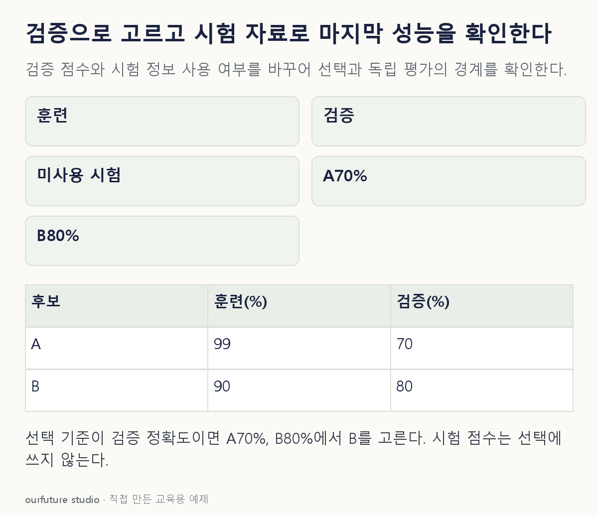

조건을 바꾸며 확인하기
가상 검증 점수의 비교다. 통계적 유의성·동점 해소·최종 재학습·실제 성능은 계산하지 않는다.
기본 예제와 비교하기
아래 그림과 표는 글의 기본 조건입니다. 입력을 바꾼 결과는 계산 칸에서 확인하세요.

같은 문제를 직접 골라 보기
같은 검증 자료의 정확도로 후보를 고른다. A: 훈련99%·검증70%, B: 훈련90%·검증80%. 시험은 아직 보지 않았다.
조건을 더 바꾸면?
B를 정한 뒤 시험 정확도가 기대보다 낮았다. 시험 결과에 맞춰 A·B 중 다시 선택하면 같은 시험 자료를 최종 평가로 써도 될까?
변형 풀이 확인
그럴 수 없다.
이미 선택에 사용한 평가 정보가 되었으므로 새로운 평가 자료나 변경 이력을 구분한 후속 검증이 필요하다.
훈련은 학습, 검증은 선택, 시험은 선택 뒤 확인이다.